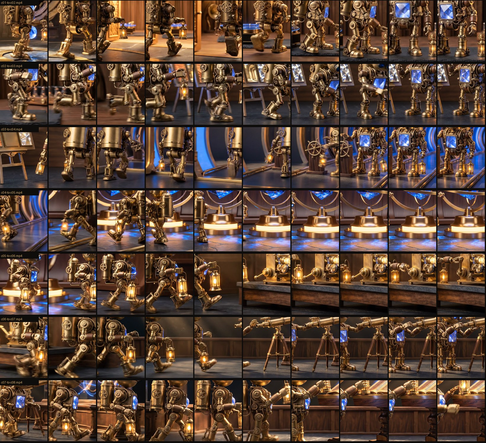
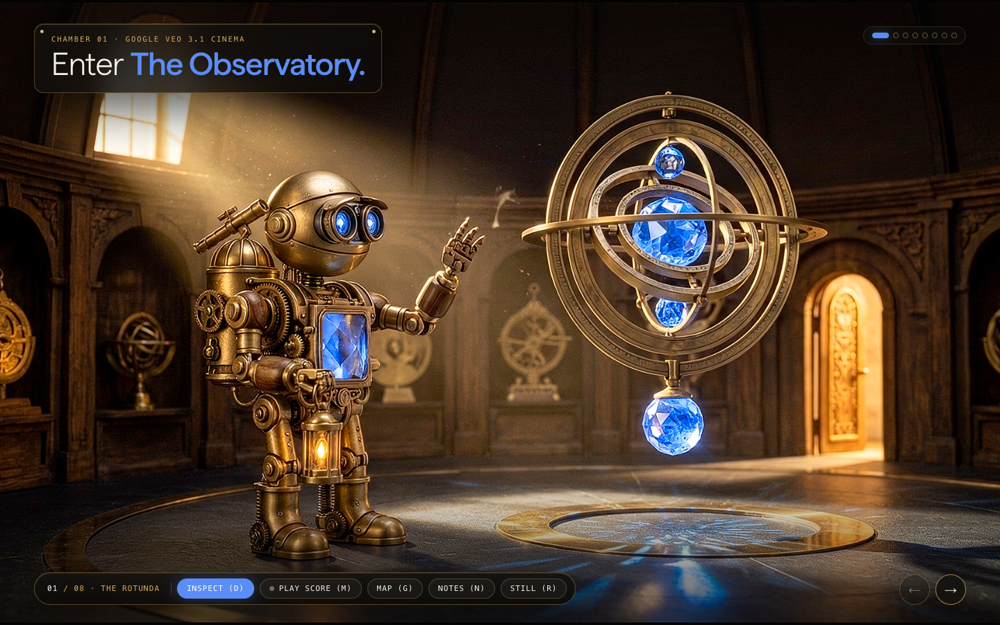
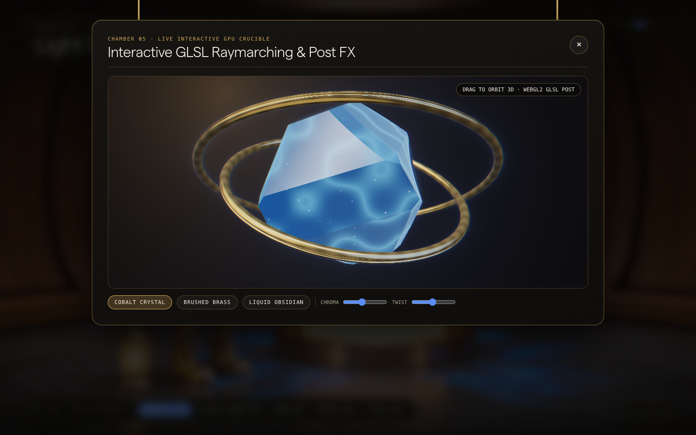
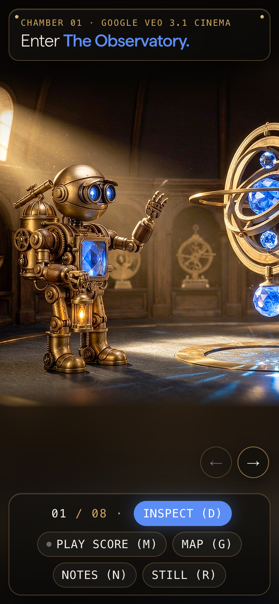

Desktop 1440×900
WebGL2 60fps Shader
Mobile 390×844 PortraitInterviews you on world aesthetic & guide character, films seamless room loops + camera walks, and builds a live interactive stage.
Interviews you on footage, data overlays & pacing, then compiles a 1080p film with tracked per-pixel glow, clean typography & synced audio.
Interviews you on instrumentation, BPM & mood, generates & masters stereo tracks to −16 LUFS, and wires live waveform scrubbing.
Interviews you on 3D physics & lighting, then builds a 60fps raymarched WebGL2 canvas with smooth inertia orbit & live shader controls.
Interviews you on camera path & depth stops, encodes a GOP-8 first-person flight, and preloads an in-memory Blob for 60fps wheel scrubbing.
Spins up a local server, tests every button across desktop & 390px mobile, audits transition frame strips, and fixes bugs until 0 errors.